1. What is the IUPAC name for CH3CH2C(CH3)2CH2CH(CH3)2? A) 3,3,5-trimethylhexane B) 2,2,5-trimethylhexane C) 2,4,4-trimethylhexane D) 1,1,3,3-tetramethylpentane
2. Which of the following conformational structures is 2-methylpentane ?
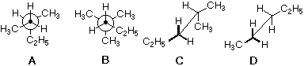
3 The alkane CH3CH2C(CH3)2CH2CH(CH3)2 has how many 1º, 2º. 3º & 4º carbon atoms?
4 There are four constitutional isomers having the formula C4H9Cl Which of the following would be a correct IUPAC name for one of these isomers? A) 1-chloro-2-methylpropane B) 3-chlorobutane C) 2-chloro-2-methylbutane D) 1-chloro-3-methylpropane
5 Which isomer of hexane has only two different sets of structurally equivalent hydrogen atoms.? A) 2,2-dimethylbutane B) 2-methylpentane C) 3-methylpentane D) 2,3-dimethylbutane
6 Limiting your answer to cycloalkanes and ignoring stereoisomers, how many C6H12 constitutional isomers are there? A) 6 B) 9 C) 12 D) 13
7 The IUPAC name for (CH3)2CHCH(CH3)CH2CH=CH2 is ... A) 4,5-dimethyl-1-hexene B) 4,5,5-trimethyl-1-pentene C) 2,3-dimethyl-5-hexene D) 4-methyl-4-isopropyl-1-butene
8 How many isomeric pentenes (C5H10) exist? (count stereoisomers as well) A) 4 B) 5 C) 6 D) 7
9 The preferred conformation of cis-1,3-dimethylcyclohexane is ... A) chair--diaxial B) chair--diequatorial C) chair--one axial / one equatorial D) boat--mixed orientations
10 Which of the following represents the most stable conformation of all cis-1,2,4-trimethylcyclohexane?
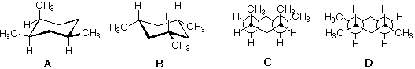
11 A C6H12 compound reacts with ozone to yield a single C3H6O product. Gas phase free radical bromination of the hydrocarbon gives a single C6H11Br product. A likely identification of this compound is .. A) cyclohexane B) cyclohexene C) 3-hexene D) 2,3-dimethyl-2-butene
12 The terpene ocimene has the IUPAC name (3E)-3,7-dimethyl-1,3,6-octatriene, what is the structural formula of this compound?
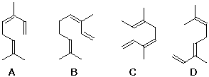
13 The most typical reaction of simple alkenes is ... A) electrophilic substitution B) nucleophilic substitution C) electrophilic addition D) nucleophilic addition
14 Which of the following dimethylcyclobutanes is chiral ? A) trans-1,2-dimethylcyclobutane B) cis-1,2-dimethylcyclobutane C) trans-1,3-dimethylcyclobutane D) cis-1,3-dimethylcyclobutane
15 What is the structure of bicyclo[3.1.1]heptane?
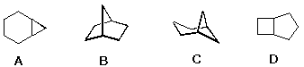
16 Which of the following C6H12 isomers has the largest heat of combustion? A) cyclohexane B) methylcyclopentane C) ethylcyclobutane D) propylcyclopropane
17 The radical halogenation of 2-methylpropane gives two products: (CH3)2CHCH2X (minor) and (CH3)3CX (major) Chlorination gives a larger amount of the minor product than does bromination, Why? A) Bromine is more reactive than chlorine and is able to attack the less reactive 3º C-H. B) Bromine atoms are less reactive (more selective) than chlorine, and preferentially attack the weaker 3º C-H bond. C) The methyl groups are more hindered to attack by the larger bromine atom. D) Bromination is reversible and the more stable 3º-alkyl bromide is formed exclusively.
18 A tertiary carbocation (carbonium ion) is more stable than either a secondary or primary carbocation because ... A) it carries three positive charges B) it has a pyramidal configuration C) it has a trigonal planar configuration D) it possesses three electron-donating substituent groups
19 Which of the following is not an electrophile? A) C2H5OC2H5 B) BF3 C) [CH3]3C(+) D) HOCl
20 Which of the following olefins would you expect to react most rapidly with concentrated sulphuric acid ? A) H2C=CH2 B) (CH3)2C=CH2 C) Cl2C=CCl2 D) CF3CH=CH2
21 Which compound is a likely product from addition of Cl2 to 1-butene? A) CH3CH2CH2CHCl2 B) CH3CH2CHClCH2Cl C) ClCH2CH2CH2CH2Cl D) CH3CH2CCl2CH3
22 The product from OsO4 hydroxylation of trans-2-butene will be ... A) achiral B) optically active C) racemic D) a meso compound
23 The product from bromine addition to trans-2-butene will be ... A) optically active B) racemic C) a meso compound D) chiral
24 Addition of 1 equivalent of bromine to 2,4-hexadiene at 0º C gives 4,5-dibromo-2-hexene plus an isomer. Which of the following is that isomer? A) 5,5-dibromo-2-hexene B) 2,5-dibromo-3-hexene C) 2,2-dibromo-3-hexene D) 2,3-dibromo-4-hexene
25 How many sp hybridized carbon atoms are present in a molecule of 3-methyl-4-vinyl-1,2-heptadien-5-yne? A) 2 B) 3 C) 4 D) 5
26 Treatment of 1-methylcyclohexene with an ether solution of diborane ( B2H6 ), followed by reaction with alkaline H2O2 produces what product? A) 1-methylcyclohexanol B) cis-1-methylcyclohexane-1,2-diol C) cis-2-methylcyclohexanol D) trans-2-methylcyclohexanol
27 Which of the following will be the kinetically favored product from the depicted reaction ?
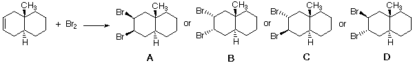
28 Two C4H6 isomers give the same C4H8O product from HgSO4 catalyzed hydration in aqueous acid. However, these isomers give different C4H6Br4 products with excess bromine. What are these isomeric hydrocarbons? A) cyclobutene and methylenecyclopropane B) 1,2-butadiene and 1,3-butadiene C) 1-butyne and 2-butyne D) 2-butyne and cyclobutene
29 Which of the following structures would be considered an enol tautomer of cyclopentanone?
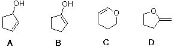
30 Two C5H8 isomers undergo catalytic (Pt) hydrogenation to form the same C5H10 product. On ozonolysis followed by oxidative workup (H2O2), one isomer gave a C5H8O4 diacid, while the other isomer gave a C5H8O3 ketoacid. Which of the following isomeric pairs correspond to this evidence? A) cyclopentene and 1-pentyne B) cyclopentene and 1-methylcyclobutene C) 1-methylcyclobutene and 3-methylcyclobutene D) cyclopentene and 3-methylcyclobutene
31 Considering that the angles of a regular pentagon are 108º, why is cyclopentane not planar? A) all the carbons are sp2 hybridized, so there is considerable angle strain. B) The C-C bonds are formed by overlap of p-orbitals, so the 90º angle results in large angle strain. C) The cyclic overlap of bonding orbitals results in anti-aromaticity destabilization. D) The five C-C bonds have eclipsing strain.
32 Which reaction conditions would best convert 3-hexyne to cis-3-hexene? A) Pt catalyst and H2. B) Lindlar's Pd catalyst and H2. C) Na in liquid NH3. D) NaNH2 in liquid NH3.
33 Reaction of 1-hexene with NBS (N-bromosuccinimide) forms two isomeric bromohexenes, one of which is 3-bromo-1-hexene. Which of the following is the other isomer? A) 1-bromo-2-hexene. B) 6-bromo-1-hexene. C) 1-bromo-1-hexene. D) 2-bromo-1-hexene.
34 A C6H10 hydrocarbon forms an insoluble silver salt when treated with silver nitrate in ethanolic ammonia. Acid catalyzed hydration with a HgSO4 catalyst generates a single C6H12O ketone, and pemanganate oxidation yields a C5H10O2 carboxylic acid This compound is most likely which of the following? A) cyclohexene. B) methylenecyclopentane. C) 1-hexyne. D) 3-hexyne.
35 Peroxide induced reaction of carbon tetrachloride with 1-butene produces which of the following? A) 1,1,1,3-tetrachloropentane. B) 1,1,1,2-tetrachloropentane. C) 1-chloro-2-trichloromethylbutane. D) 1,1-dichloro-2-ethylcyclopropane.
36 Which of the following isomeric hexenes will have the smallest heat of hydrogenation? A) 4-methyl-1-pentene. B) (E)-4-methyl-2-pentene. C) (Z)-4-methyl-2-pentene. D) 2-methyl-2-pentene.
37 A C8H14 hydrocarbon (X) is reduced by sodium in liquid ammonia to a single C8H16 product (Y). Both of these compounds undergo hydrogenation (Pt catalyst) to give 2,5-dimethylhexane. Ozonolysis of Y with an oxidative workup produces a single C4H8O2 carboxylic acid. Reaction of Y with perbenzoic acid (C6H5CO3H) gives a chiral C8H14O product, but reaction with bromine gives an achiral C8H14Br2 product What are X and Y? A) X is 2,5-dimethyl-3-hexyne ; Y is cis-2,5-dimethyl-3-hexene. B) X is 2,5-dimethyl-3-hexyne ; Y is trans-2,5-dimethyl-3-hexene. C) X is 2.5-dimethyl-1,5-hexadiene ; Y is 2,5-dimethyl-3-hexyne. D) X is 2,5-dimethyl-2,4-hexadiene ; Y is cis-2,5-dimethyl-3-hexene.
38 Which of the following compounds has two or more conjugated double bonds?
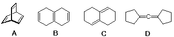
39 What reagent(s) would best achieve conversion of 3,3-dimethyl-1-butyne to the aldehyde (CH3)3CCH2CHO?
40 Which of the following dienes would best serve as a diene in a Diels-Alder reaction?
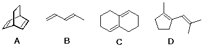
41 Which of the following is the most likely product of this Diels-Alder reaction?
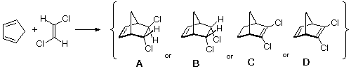
42 Which of the following is the most likely product of this Diels-Alder reaction?
43 Reaction of 1,1-dibromopentane with three equivalents of NaNH2 in ether is followed by treatment with 0.1M HCl at 0º C. What is the product? A) cyclopentene. B) 1,2-pentadiene. C) 2-pentyne. D) 1-pentyne.
44 Which of the following reagents and conditions would best serve to convert 1-butyne to 1,1-dibromobutane? A) 2 equivalents of HBr, no peroxides. B) 2 equivalents of HBr, with peroxides. C) 1 equivalent of Br2. D) 2 equivalents of Br2 followed by i equivalent of KOH.
45 What is the relative rate of addition of HBr to I: 1,3-pentadiene; II: 1,4-pentadiene; and III: 1-pentyne? A) I > II > III. B) III > II > I. C) II > I > III. D) III > I > II.
46 A chiral C6H12 hydrocarbon undergoes catalytic hydrogenation to yield an achiral C6H14 product. What is the starting compound? A) cis-2-hexene B) 3-methyl-2-pentene C) 4-methyl-2-pentene D) 3-methyl-1-pentene
47 Reaction of 3,3,6,6-tetramethyl-1,4-cyclohexadiene, first with excess aqueous mercuric acetate, then followed by sodium borohydride reduction, produces a mixture of isomeric C10H20O2 alcohols. Excluding enantiomers, how many isomeric products may be formed in this reaction? A) 2 B) 4 C) 6 D) 8
48 A C8H12 chiral hydrocarbon, X, is reduced by catalytic hydrogenation to an achiral C8H14 compound. Ozonolysis of X (H2O2 workup) gave a chiral C8H12O4 dicarboxylic acid. Which of the following could be X ?
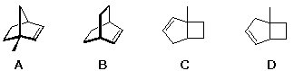
49 Which of the following reactions of cyclohexene may be considered an oxidation? A) addition of hydrogen (Pt catalyst) to give cyclohexane. B) addition of HBr to give bromocyclohexane C) epoxidation by perbenzoic acid to give cyclohexene oxide D) mercuric acetate catalyzed hydration to give cyclohexanol
50 Addition of HBr to 2,3-dimethyl-1,3-cyclohexadiene may occur in the absence or presence of peroxides. In each case two isomeric C8H13Br products are obtained. Which of the following is a common product from both reactions?
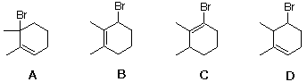
51 What structural change takes place when an alkene undergoes a Simmons-Smith reaction? A) addition of ethene gives a cyclobutane derivative. B) the double bond is shifted to a more substituted location. C) the double bond is converted to a triple bond. D) a methylene group is added to give a cyclopropane derivative.
52 Cyclooctatetraene, C8H8, appears to be a conjugated annulene. In addition to the planar configuration, three non-planar structures may be considered, all of which are shown below. Which of these is most likely to be the favored conformation? note that D is planar.
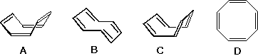
53 Which one of the following compounds contains the greatest number of sp2 hybridized carbon atoms? A) 1,4-Cycloheptadiene B) 2,5-dimethyl-2,3,4-hexatriene C) Phenylacetylene D) 1,1-diallyl-3,3-divinylcyclobutane
54 Which one of the following compounds contains the greatest number of sp hybridized carbon atoms? A) 1,4-Cyclooctadiene B) 2,5-dimethyl-2,3,4-hexatriene C) Phenylacetylene D) 1,1-diallyl-3,3-divinylcyclobutane
55 Which one of the following compounds contains the greatest number of sp3 hybridized carbon atoms? A) 1,4-Cyclooctadiene B) 2,5-dimethyl-2,3,4-hexatriene C) Phenylacetylene D) 1,1-diallyl-3,3-divinylcyclobutane
56 Which of the following isomers has the lowest heat of combustion? A) cis-1,2-dimethylcyclohexane B) trans-1,2-dimethylcyclohexane C) cis-1,3-dimethylcyclohexane D) trans-1,3-dimethylcyclohexane
57 Compound Z, C8H14, reacts with excess hydrogen and a Pt catalyst to give 2,5-dimethylhexane as the only product. Z diplays three 13C nmr signals, all at higher field than 100 ppm, and does not absorb in the UV at wavelengths greater than 200 nm. Oxidation of Z by either ozone or potassium permanganate produces a single C4H8O2 carboxylic acid. Deduce the structure of Z. A) 2,5-dimethyl-3-hexyne B) trans-2,5-dimethyl-3-hexene C) cis-2,5-dimethyl-3-hexene D) 2,5-dimethyl-2,4-hexadiene
58 Which of the following is the correct configurational prefix for the following diene?
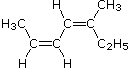